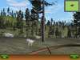

Welcome to my little corner of the web. My name is Engel Sanchez. I am a software engineer living in the green and beautiful neighborhood of
Jamaica Plain
in Boston, Massachusetts, with my wife and two young daughters. I write code for a living and love doing it.
You get to attack all sorts of problems in many different fields with it. I can not imagine doing anything else.
However, there are quite a good number of other things that interest me, so I take turns obsessing about them. If I could just split myself into 5 people...
Coding
Computer Graphics
Game AI
3D Modeling
Animation
Audio Processing
Salsa Dancing
Piano
Guitar
Chess
Math & Science
French
Portuguese
Unfortunately there is only so much time during the day and I do not have that short sleeper's gene. I haven't read a book in French or Portuguese in ages, my beautiful guitar has not been touched in months, adrenaline pumping chess matches happen perhaps once a week and Salsa Fridays only every few weeks.
One has to prioritize and have clear goals to experience the satisfaction of achieving them. This year my goals are to become an expert modeler and animator in Blender, profficient at programming sounds with Pure data, release a Unity game with assets and sound effects created by me, get my visual data processing framework out there as an open source project and digest a few other Math books. That is the list after prioritizing. I am going to need a lot of coffee...
These are my main active projects. I have more little experiments and prototypes buried somewhere in the many hard drives at home. I really should dig them up soon...
Turn based network games

My current experiment involves turn based online games with an Erlang back end and HTML5 and Unity web player front ends. The first one is a 4-in-inline mobile optimized game that should be public shortly. Everything is open sourced and available from my Github page.
Alien Party
A children's game inspired by my daughter's favorite game and characters of her own design. It's designed to be easy enough to be played by very small children (3year+) without help, without menus or text. I will publish it as a payed iOS game later this year, but you will always be able to play the Unity web player version for free.
Website
alienpartygame.com
Hunter

A little demo I wrote back in 2009 when I quit my job
and decided to bring game programming back into my life after a decade of neglect.
I am dying to go back into it and turn it into a proper game in Unity. C++, Ogre3D, FMOD.
Website
hunter.sf.net
RowStreams
A modern C++ library for processing of streams of row data based on ideas from a Java data processing framework I built at a previous job.
Right now it's not much more than a sample, but I will get back to it soon to add support for the new C++11 goodies.
Website
rowstreams.sf.net
Blender is quite possibly the most amazing open source software package out there. You can
create 3D models, texture paint them, animate them, render stills and short films, add post-processing effects, edit video and audio and even create entire games with it. Below are a couple of my Blender tutorials. You can find more on my Youtube page. I'm currently the organizer of the Boston Blender User Group.
Here's a little tutorial in which I quickly demonstrate how to create a simple 3D model, texture paint it and animate it in about 12 minutes.
The next one is similar, but here we go all the way and show you how to use an animated character in Unity.
A more in depth workshop on rigging. That is, the process of preparing a 3D model for animations. The first part:
And the second part:
Learning to make music has been an obsession of mine for many, many years. I have absolutely no natural talent
in this area. But I love it way too much to ever quit. For as long as I have fingers, my digital piano, guitar, ukulele
and melodica will get more punishment than they deserve. I am mostly self taught, which means I have
many more bad habits than good. Luckily my friend Evan, who has been my daughter's Kindermusik teacher for
years, gave me proper guitar playing lessons for a good year or two and was able to rectify a lot of
my self inflicted problems.
The biggest Aha! moment I experience in my long music learning journey came from reading the
book How to Play Piano Despite Years of Lessons: What Music Is and How to Make It at Home.
It's quite an old book, but it helped me greatly. It really shows you the essence of music
theory and encourages you to mess around with music without giving too
much thought to the "right" way of doing things. Get a solid understanding of the basics first, then
the rest is just to practice, practice, practice. But practicing without understanding is wasted time.
Below is a sampler of different Salsa dancers and styles. Some dancers
like acrobatics and fancy knots, some are smoother, some are just a lot of fun to watch. It is very easy to
get addicted this style of dancing. It's sizzling hot, and it can be highly technical. Dancing with a partner
and keeping your leads fun and interesting is a complex problem that can be very appealing to geeks like me. And yes,
I am planning to write some software to tackle this problem :).